Rewdio
An AI agent that tunes your room, so music sounds the way it did in the studio.
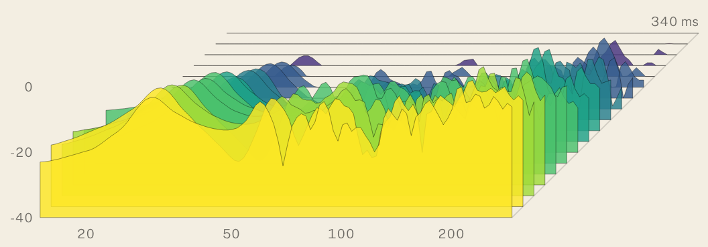
Hearing what the artist heard
When you walk into an art gallery, you often get to see an artwork well lit, surrounded by white walls and a lot of space. You get a clean, clear view of what the artist is trying to say, presented as well as it can be. Music is often not like that at all. The artist makes something transcendent in a controlled studio with superb monitoring, and then most people listen to it on earbuds.
I love music, and I want to experience it with respect and feel what the artist might have felt when they heard their mix playing back. The best way to do that is to listen in a tuned room. Controlling reflections, decay and frequency response is a lot like making sure a painting has good lighting and clear walls. But doing that with the tools available is technically challenging and time-consuming. I wanted to make it easier, so I created Rewdio.
Why it's hard
Every room colours what you hear. Reflections smear the stereo image, low notes keep ringing after the music has moved on, and the walls turn some frequencies into peaks and swallow others whole. Taming that means hours with a measurement mic, a laptop running Room EQ Wizard and a DSP box: sweep, read the graphs, nudge a delay by a fraction of a millisecond, sweep again. Most people stop at good enough.
I wanted to hand that whole loop to an AI, and only be asked to do the things a machine physically can't: move a microphone, move a subwoofer.
The idea
Rewdio is an MCP server, a set of tools Claude can call, that connects three things that normally never talk to each other: Room EQ Wizard, which runs the measurements; a miniDSP, which applies the corrections; and Claude, which reads every result and decides what to try next.
It runs as a closed loop. Measure each speaker on its own by muting the others at the DSP. Predict what a change in level, delay or polarity will do. Apply it. Measure again to check the prediction against reality. If the model and the room disagree, re-measure and re-solve. If another pass won't help, stop and say why, which is usually that the subs are in the wrong place.
Finding where the subs should go
Subwoofer placement matters more than any amount of EQ, but testing every spot in a room by dragging a 30 kg sub around is not realistic. So Rewdio flips the problem. By acoustic reciprocity, putting the sub at your seat and moving the microphone to each candidate spot gives the same answer as moving the sub. The mic is the easy thing to carry.
The room becomes a lettered grid. You mark A1 with a tape measure, and your phone tells you where to go next in very large type, with the spot pulsing on a plan of the room. Each spot fills in as it's measured: the darker it is, the better a sub there would sound at your seat. At the end, Rewdio ranks every pair of spots as two subs working together, with the best delay and level for each, and tells you where to put them.
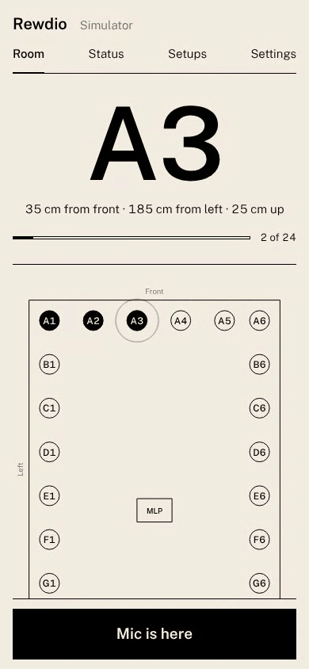
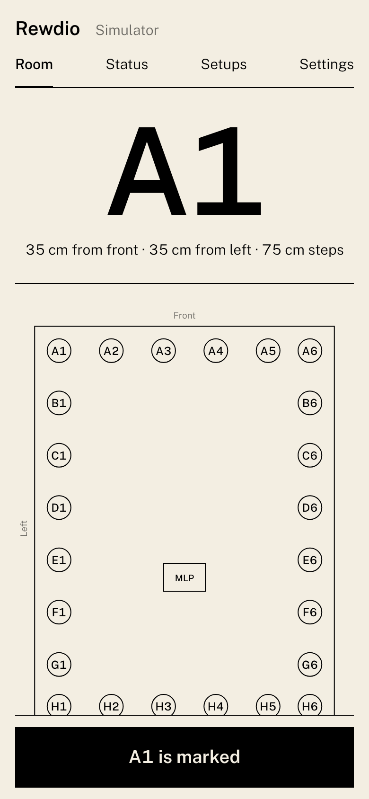
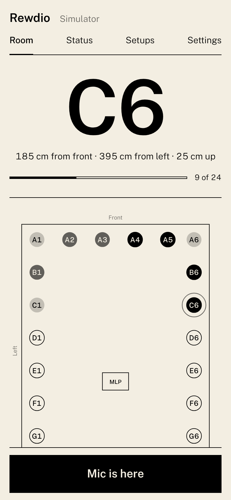
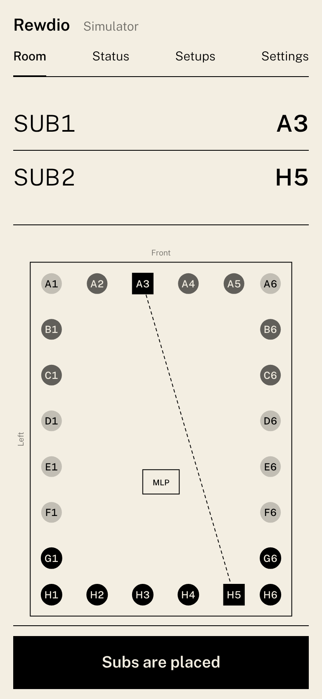
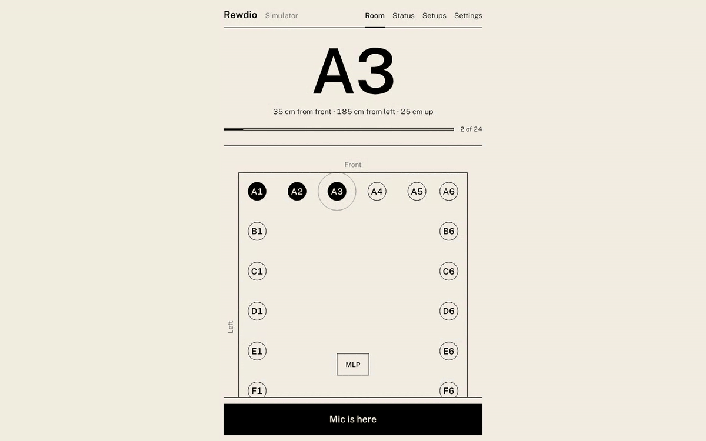
Restraint as a feature
The easy way to make a graph look flat is to pile on EQ, and it usually sounds worse. Rewdio is built to do as little as possible. It works up a ladder and stops at the first rung that's good enough: placement first, then level, delay and polarity, and EQ only as a last resort. EQ is never touched on the first pass, only cuts are allowed, at most three filters, and every filter has to earn its place by measurably reducing the worst peak. Changes too small to hear are never written to the DSP at all.
Reading the room
The response chart shows what the room does to each frequency. The waterfall shows how long it keeps doing it. Each slice is the spectrum a few milliseconds later than the one before, so ridges that run a long way back are room modes that keep ringing after the music stops. It's the one place in the interface where colour appears, coloured by time from yellow to purple.
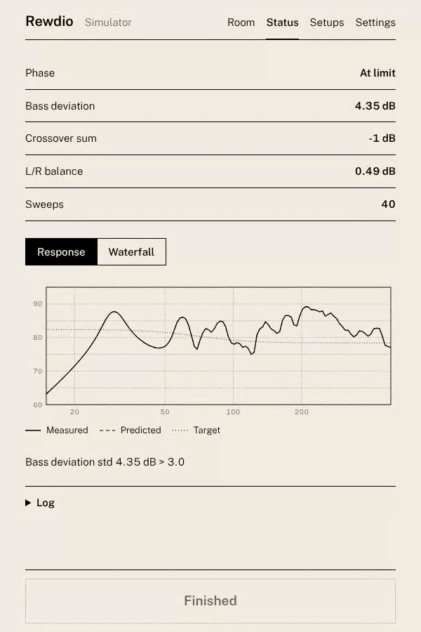
Hearing the difference
Graphs only go so far. Every calibration can be saved as a named, dated setup, and any two can be put on A and B and switched instantly at the DSP. Blind mode relabels them 1 and 2 in a random order and hides which is which until you reveal it, so the choice is made by ear, not by expectation.
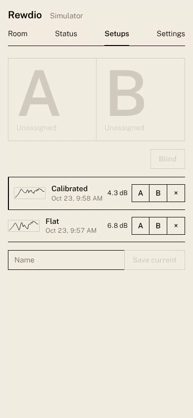
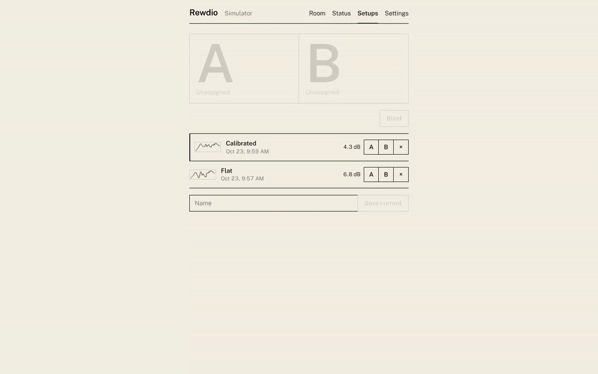
Design
The interface is deliberately quiet. Cream and black, Public Sans in three weights, hairline dividers, rectangular controls, mixed case, and no labels stacked above headlines. Every value comes from a single set of design tokens, and automated tests fail the build if a colour, a rounded corner or all-caps text creeps in. The phone is the primary device, because during a calibration you're on the floor with a microphone, not at a desk.
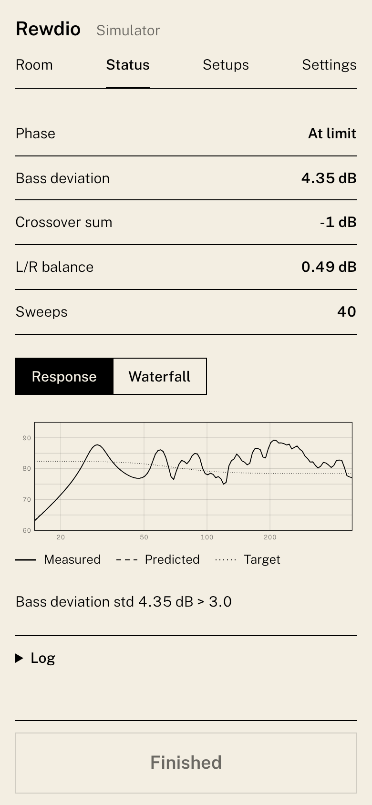
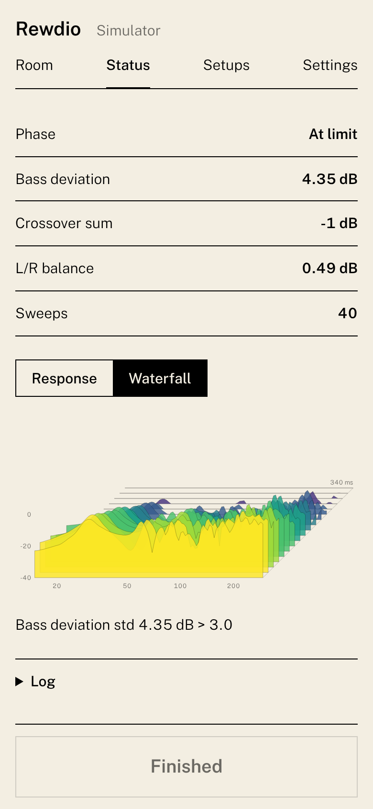
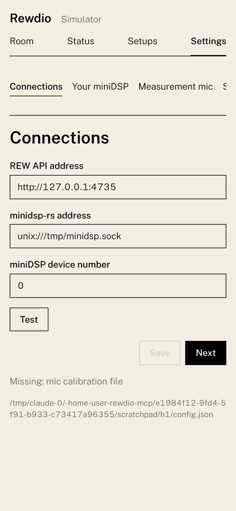
Engineering
I wrote this with Claude Code, directing it like a small engineering team. Before Rewdio ever touched real hardware, it was built against a simulated room: a physical model with room modes and reflections, plus fake versions of Room EQ Wizard and the miniDSP that behave like the real ones, faults included. Full calibrations run end to end in the test suite, 60 tests in all, including a ground-truth check that the reciprocity ranking matches actually moving the subs.
A separate AI code review audited the whole codebase and found ten issues, from a file-access hole in the web server to the DSP state drifting out of sync after a failed write. Each was fixed with a test that proves it. Every setting lives in configuration, not code, and no module is longer than 500 lines.
In the simulated room, moving the subs to the crawl's recommended spots took bass deviation at the seat from about 6 dB to about 4 dB, with no EQ at all, and the model predicted each measurement to within a tenth of a decibel.
What's next
The first run on real hardware: my own room, the 2x4HD and two Rythmik subs. Then a two-column layout for the desktop, and a bounded crawl for rooms where only part of the floor is available.